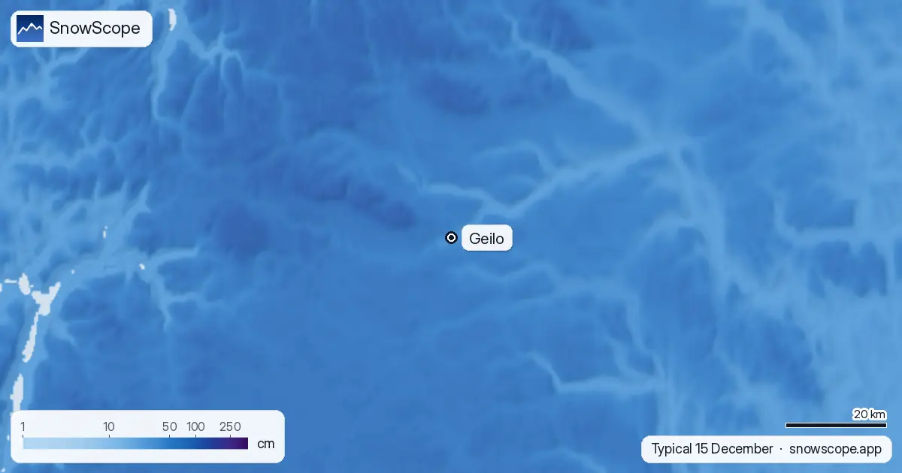

Geilo in December: steady family snow and a day pass from NOK 590
Geilo's official page starts day passes at NOK 590, about EUR 56, and in our 46 winters of snow history its gentle slopes are among the steadiest in Norway in December: 96 % of winters had 30 cm or more at mid-mountain (971 m) in the week of 15-21 December.
See the live snow forecast for Geilo in the SnowScope appSnow depth, powder alerts and the 3D map, free.
Beginners and families
This is the classic Norwegian family resort: 35 km of mapped runs and 20 lifts on a high plateau, with a modest 384 m of vertical between 779 m and 1163 m. Gentle is the key word. For a first ski week the snow matters more than the drop, and Geilo's snow starts low: the base had 30 cm in the week of 15-21 December in 80 % of our winters, and was never bare on 15 December in 46 winters.


Good intermediate skiers
You will not find long steep runs, but you will find cover. The top had 30 cm or more in 98 % of winters in every December week from 8 December on, and 83 % of winters had 60 cm or more there in Christmas week. A typical 15 December gives 42 cm at the base, 57 cm at mid-mountain and 68 cm at the top.
The snow behind the advice
Snow here is water stored in a cold, high landscape, and that store builds early: the usual first day with 30 cm at mid-mountain is 14 November. Even a thin year (1 winter in 10) keeps 35 cm at mid-mountain on 15 December.
The trend is down but not dramatic. The December average at the base fell from 51 cm in the first 15 winters to 32 cm in the last 15; at mid-mountain from 64 to 52 cm. Every Christmas week of the last 15 winters still had 30 cm at mid-mountain.
Cost
Geilo's official ski-pass page shows an adult day pass from NOK 590 and multi-day passes from NOK 1,138; prices depend on the date and the number of days. At the euro reference rate of 12 November, NOK 590 is about EUR 56. That is a starting price, so check your dates in the shop before you count on it.
Or go to Hafjell?
Hafjell, the former Olympic area near Lillehammer, has much more vertical (866 m) but starts very low, at 192 m. Its snow in December is a little thinner at mid-mountain: 52 cm on a typical 15 December and 85 % of winters with 30 cm in the week of 15-21 December. Its prices are dynamic too, and we could not read a fixed number on its official page.
For families who want reliable December snow on easy slopes, Geilo is the safer pick.
Tips for skiers
- Book any week from 8 December: the top had 30 cm in 98 % of our winters from then on.
- Check the price for your exact dates online: NOK 590 is the 'from' price.
- Geilo is on the Oslo-Bergen railway line: the train saves the cost of a car on winter roads.
- Dress for deep cold; the plateau is exposed and December days are short.
More maps (external sites)
References and credits
- Geilo: official lift-pass prices (2026-27), checked 13 November 2026 www.skigeilo.no/en/ski-pass
- Hafjell: official lift-pass page of the operator (prices by date; no fixed price quoted), checked 13 November 2026 www.alpinco.com/en/hafjell/buy-day-pass-1-8-days
- European Central Bank euro reference rates (2026-11-12) www.ecb.europa.eu/stats/policy_and_exchange_rates/euro_reference_exchange_rates/html/index.en.html
About these numbers
Snow numbers: SnowScope snow history, 46 past winters (1980-81 to 2025-26) at the resort's heights, corrected for height (an estimate for an area, not resort reports); 'good snow' = 30 cm or more on the ground as the week's average. Map: our typical depth on 15 December spread over the terrain by height. Runs and lifts: OpenSkiMap mapping. Lift-pass prices: the resorts' official price lists, checked on 13 November 2026; prices can change.
Official avalanche bulletins: Varsom (NVE)
Cite this report
For research, teaching or the press: the numbers and charts are free to reuse under CC BY 4.0 with this citation.
SnowScope (2026), Geilo in December: steady family snow and a day pass from NOK 590, https://snowscope.app/blog/en/2026/11/geilo-december-ski-trip-family-cheap-snow.html, accessed 2026-11-14
SnowScope (Atlas Labs). (2026, November 14). Geilo in December: steady family snow and a day pass from NOK 590. SnowScope snow reports. https://snowscope.app/blog/en/2026/11/geilo-december-ski-trip-family-cheap-snow.html
BibTeX
@misc{snowscope2026geilodecemberskitripfami,
author = {{SnowScope (Atlas Labs)}},
title = {Geilo in December: steady family snow and a day pass from NOK 590},
year = {2026},
month = nov,
howpublished = {\url{https://snowscope.app/blog/en/2026/11/geilo-december-ski-trip-family-cheap-snow.html}},
note = {Published 2026-11-14 13:29 UTC; accessed 2026-11-14}
}· CC BY 4.0 · Methods, data and tools →
Geilo: snow and temperature by height, this winter vs last (tools) →
Follow Geilo
Free: a message when fresh snow is coming, and the forecast every morning.
More snow reports

Saas-Fee lifts reach 3556 m where our snow history shows 100 % of past winters have at least 30 cm of snow by mid-December.

Puy-Saint-Vincent pairs a 44 EUR adult 1-day pass with solid December snow higher up, compared here with its big neighbour Serre Chevalier.

Pila above Aosta pairs a flat 60.00 EUR day pass with reliable December snow on its upper slopes.